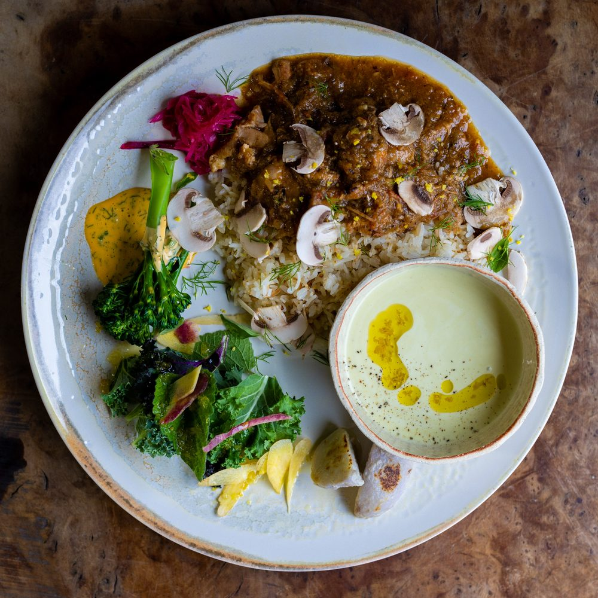
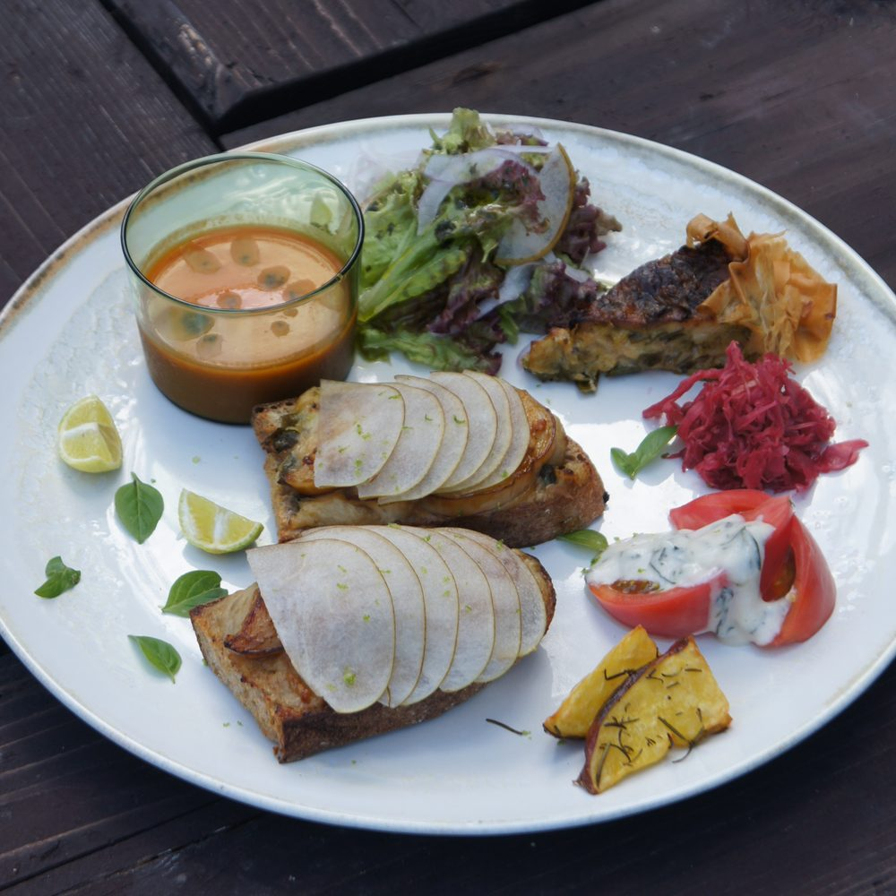
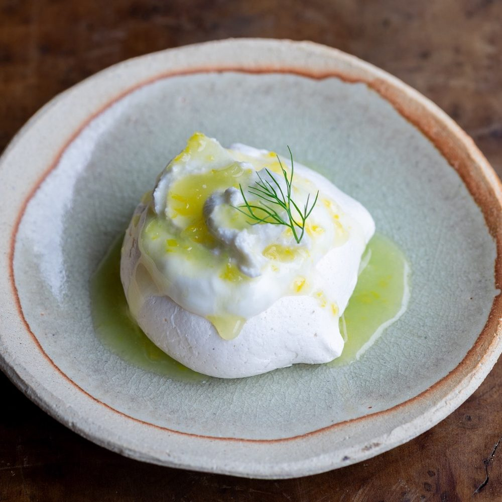
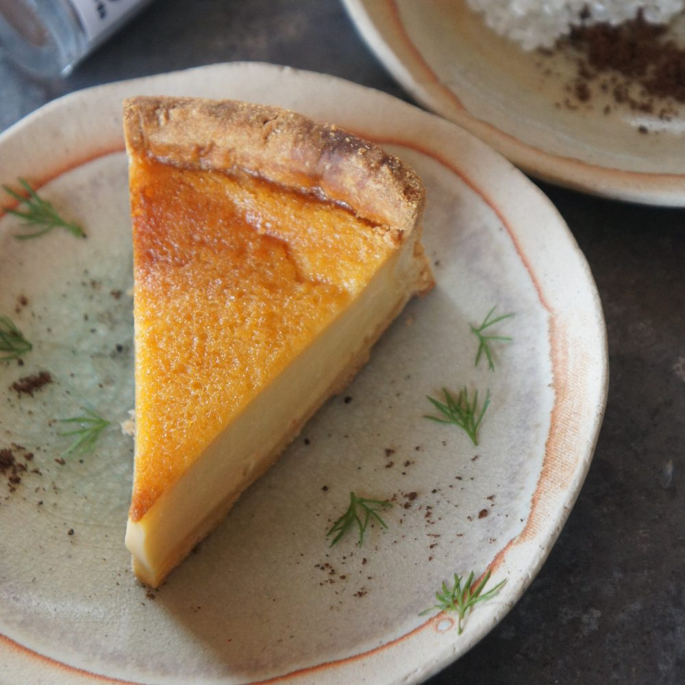

プレート・デザート・ドリンクから
それぞれ1つずつ店頭にてお選びいただきます。
プレート
-

ご飯プレート白ワインでやわらかく煮込んだ
チキンと香りのごはん -

オープンサンドプレート白茄子と梨の
タルティーヌと
キッシュ
デザート
-

レモンとココナッツ
爽やかなメレンゲ菓子一つひとつ丁寧に焼き上げたメレンゲ菓子です。柑橘とココナッツの香りが爽やかな一品です。
-

米粉のフラン
プリンのような食感のタルトのケーキです。葛城産の平飼い卵とバターをたっぷり使用しています。
-
季節のフラン
フランをベースに、季節の食材を使ったソースを添えた一品です。
ドリンク
ソフトドリンク
-
ドリップコーヒー（ICE / HOT）
THE INYさんのコーヒー豆を使用しています。
-
カフェラテ（ICE / HOT）
THE INYさんのコーヒー豆を使用しています。
-
抹茶ラテ（ICE / HOT）
奈良県山添村 北村園さんの、無農薬で栽培された抹茶を使用しています。
-
チャイラテ（ICE / HOT）
自家製のチャイシロップを牛乳で割ったドリンクです。
-
チャイソーダ
自家製チャイシロップを炭酸で割った、爽やかなドリンクです。
-
自家製シロップソーダ
手づくりのシロップを炭酸で割ったドリンクです。いちご、または季節の柑橘からお選びいただけます。
ノンアルコール
-
柑橘のモヒート
季節の柑橘と、お店の庭で採れたミントを合わせたノンアルモヒートです。
-
CLAUSTHALER
ノンアルコールビールです。
アルコール
-
吉野杉ペールエール
奈良県奥大和にあるクラフトビール醸造所「グッドウルフ麦酒」さんのビールです。
-
ほうじ茶スタウト
奈良県奥大和にあるクラフトビール醸造所「グッドウルフ麦酒」さんのビールです。
2,650円〜税込
デザートとドリンクの料金も含まれています。
- 表示価格はすべて税込です。
- お選びいただくメニューによって、追加料金が発生する場合がございます。
- 仕入れの状況により、内容が変わる場合がございます。
- アレルギーのある方は、ご予約時のご要望欄にご記入ください。